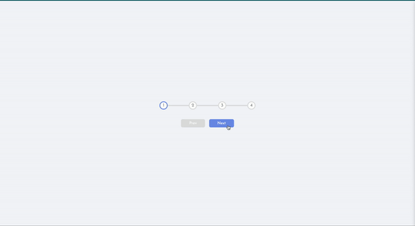
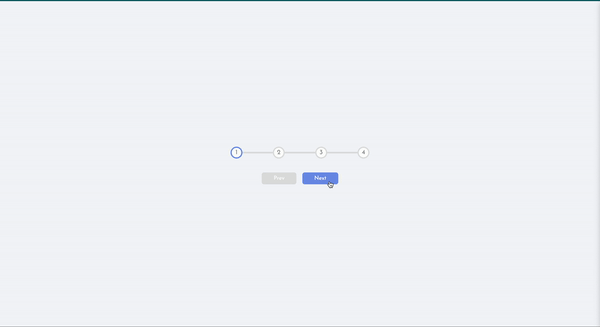

Andrea Varnado
Software DeveloperAs a junior full-stack developer, I'm just starting my journey in the exciting world of software development. To succeed, I need to be a great communicator, collaborator, and skilled coder who writes clean and well-organized code. I also need to manage my time effectively, break down projects into smaller tasks, and prioritize my work to meet deadlines. Additionally, staying up to date with the latest trends and best practices is crucial. I should always seek to improve my skills through personal projects, attend meetups and conferences, and participate in online forums. With passion, dedication, and a willingness to learn, I can build a successful career in software development and contribute to the incredible world of technology!
My Projects
 
